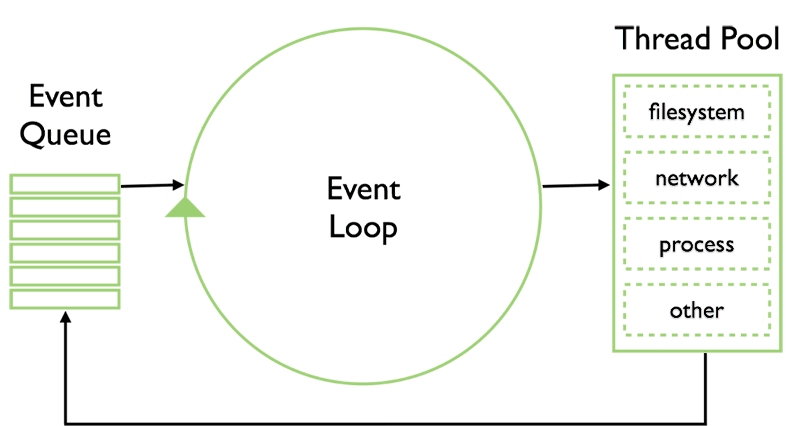
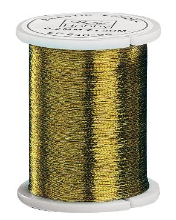

Forschungswoche
node.js
Request/Response Modell
Hauptsächlich warten!

Event Loop

Nur ein Thread

Dadurch muss alles asynchron passieren (IO/Net..)
node.js
- Javascript
- asynchrone libs für alle Operationen
- Eventgetrieben (Callback / Eventemitter)
- Nicht asynchron? -> Thread -> pipe
- Gut für Netzwerk Zeugs (HTTP/DNS)
- Microsoft sorgt für gute Windows Binaries
Debugging
(as ) at /home/dap/node-stack/examples/loop-anon.js line 15
func2 at /home/dap/node-stack/examples/loop-anon.js line 13
func1 at /home/dap/node-stack/examples/loop-anon.js line 1180473d4 main at /home/dap/node-stack/examples/loop-anon.js line 10
(as ) at /home/dap/node-stack/examples/loop-anon.js line 1
(as Module._compile) at module.js line 340
(as Module._extensions) at module.js line 406
(as Module.load) at module.js line 324
(as Module._load) at module.js line 257
(as Module.runMain) at module.js line 419
(as startup.processNextTick.process._tickCallback) at node.js line 120
WTF?
Callback Hölle
fs.readdir(source, function(err, files) {
if (err) {
console.log('Error finding files: ' + err)
} else {
files.forEach(function(filename, fileIndex) {
console.log(filename)
gm(source + filename).size(function(err, values) {
if (err) {
console.log('Error identifying file size: ' + err)
} else {
console.log(filename + ' : ' + values)
aspect = (values.width / values.height)
widths.forEach(function(width, widthIndex) {
height = Math.round(width / aspect)
console.log(filename + 'to ' + height + 'x' + height)
this.resize(width, height).write(destination + 'w' + width + '_' + filename, function(err) {
if (err) console.log('Error writing file: ' + err)
})
}.bind(this))
}
})
})
}
})
Aber es gibt ja Step, require.js und das module-system von node.js
Dependency Management
Javascript per Hand installieren?

- Wie Bundler
- Registry a la rubygems.org
- Lokales oder global installieren von packages (node_modules)
- Kommt mit node.js (ausser via homebrew)
Demo Apps:
- File I/O
- Webserver
- Express / Sinatra in JS
- Mysql
- events / EventEmitter
- Pub/Sub
- Job Queue